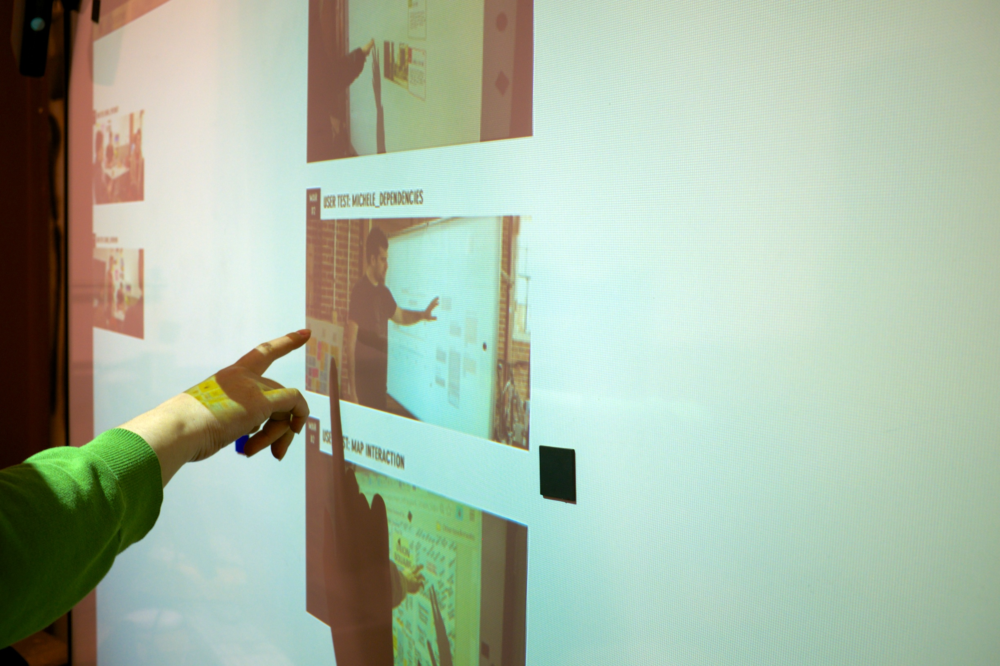
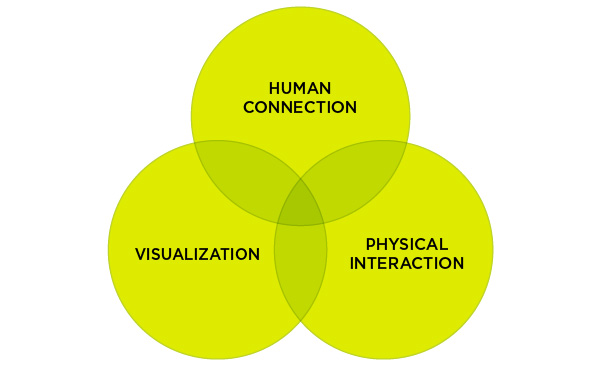
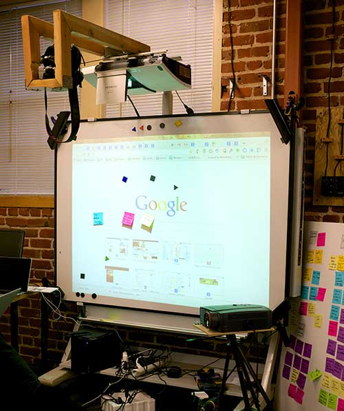

Get physical with your data
Human connection
BRIDGE eliminates the complexity of web tools, enabling a wide base of users to navigate and share information.
Visualization
BRIDGE's visual interactive workspace and tangible interfaces change the way we interact with information.
Physical interaction
BRIDGE connects the limitless potential of Internet and the digital space to the sensory richness of our physical world.
Natalie Kim.
UX designer
MFA student
Scott Macdonald.
Mechanical engineer
MS student
Botao Hu.
Developer
MS in Computer Science
Carlos Martínez.
Journalist
JSK Knight Fellow

Through extensive, human-centered research we have looked into how people interact with digital and analog data. During the research, we landed on an intriguing aspect: how the visual, physical, and ambient presence of data influence the ways we interact with it. We built a prototype to test the core function and we’re refining it based on our user feedback.
Bridge is to propose more intuitive ways for us to interact with the digital world, by elevating what comes natural for us. Ultimately it will act as a bridge that connects people to people, physical to digital, and people to technology.

Navigating, creating and sharing digital artifacts are complex tasks preventing large groups of users from enjoying the benefits and the social engagement derived from the trove of information and interactions available on the Internet.
We believe that a new breed of simple, innovative interfaces rooted in our own physical experiences will help fill this gap. BRIDGE explores this opportunity.
BRIDGE is an ecosystem of hardware and software that turns any surface into an interactive space, connecting the digital and the physical worlds. Using tangible interfaces, people can intuitively navigate, create, and share digital information.
The interactions we have on laptops, mobile devices and workstations are tailored for efficiency and productivity, but divorced from experiential engagement that happens in the physical world. BRIDGE makes it easy for individuals and groups to digitally interact with digital information by using the physical affordances that exist in our natural world.

Contact
bigmap [at] googlegroups [dot] com